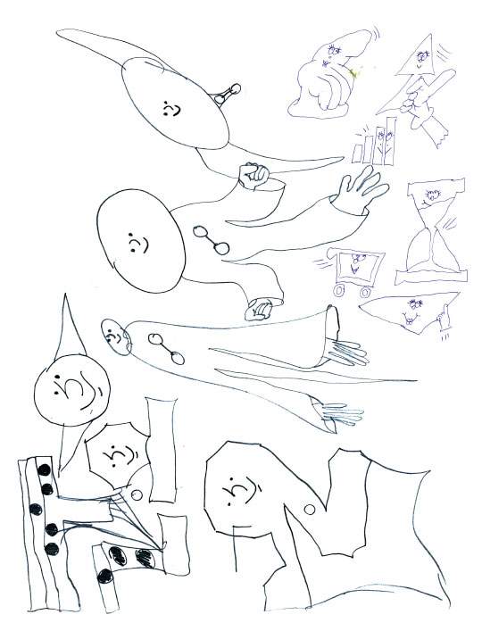

Leon Sadler

When was the last time you felt bad about drawing?
I felt bad about drawing yesterday because my friend Yannick Val Gesto was really blunt about how he felt about some recent photos of in-progress paintings I showed him. I mean it's great, I value his honesty so much (plus he thinks loads of my other stuff is great) but I was just thinking a lot about drawing, and how the things I am most happy with, the most effective things I produce, are like tiny tiny insignificant pen drawings on the smallest bits of crap paper. How on earth can I handle these tiny expressions, they seem to have so much potential. But leaving them in that tiny state I feel is a bit ... worthless or unambitious or something ... like how can an audience really respond to lots of tiny drawings on small bits of paper?
Do you have that voice inside you thinks of ways to reproduce those small gestures in a big marketable way? Through contemporary art, I guess. YVG and you have both found ways to make something sexy while also being able to incorporate drawing.
Well, YVG has definitely nailed it! I'm trying to think like that, I see the plastic shiny objects and metallic things, marketable contemporary art objects, and drool. At the same time I am so used to being broke, I usually try to find the best money-saving approach to everything, which is totally contrary to how I should be approaching this. [Laughs], even when I use some printer place online I tend to wait until they have a special offer on. Then there's my anti-capitalist side that kicks in, my anti-arts & crafts side, my anti-lazy & unambitious side, my lazy and unambitious side, my ambitious capitalistic side, so many conflicting sides that stop anything getting done! My answer to that question is basically "yes" [Laughs] ... I mean I'm not just thinking of this stuff in terms of only making my drawings sexy and marketable. I want to make something that I'm excited about seeing, and excited about creating, and drawings on paper just aren't that satisfying. I don't care about looking at anyone's small drawings on paper
Totally. When did your ambitious capitalistic side kick in? Is that part of being an adult?
I thought maybe a year or so ago "Why aren't I allowed to aspire to having commercial success, wealth, and a comfortable life?" It seems like my country (and Europe and the rest of the westernised world?) is proposing that there is no hope for young people anymore. No jobs, no houses, no state support. I can see this is true, I know it's not possible to change that system, but what are you supposed to just accept it and give up? I think I have very humanist ideologies and whatever, maybe I can be a "good' capitalist...? Is that possible? How can you be ambitious without being evil? Is it obvious that I can't help but associate commercial success with evil? It's so stupid to think like that, and so unproductive! When you reject stuff for so long, it seems important to go back and think about why you're rejecting it, can you work with it or subvert it? What am I supposed to do next? I love making comics but they are so unrewarding and there is no viable support structure. There are no jobs in comics, it's condemned to be a hobby medium. I mean where can I really go? I am very very pleased to work on Mould Map, very very pleased that I have a couple of publishers who have got my back for future projects and I have an audience, it's amazing, I'm so damn lucky that people even look at the stuff I make!! There is so much possibility!!! Being invited to talk about Mould Map at the Oslo Comics Fest was just like one of the most gratifying experiences of my life! They paid for us to go there, talk about our ideas with a microphone, eat some really good free food and drinks, and stay in a very nice hotel, and we could go in the day to a tiny island and jump into the sea! I mean that was THE LIFESTYLE I want!! Please whoever is in charge of comics you have to make this happen all the time!!! God, and we raised SO MUCH money to print Mould Map! And god damn I went to stay with the best cartoonists in America last year, they are my friends! It's a dream come true! Now pay me!!! [Laughs] look at this flip flop! SO negative and positive!
That trip sounds incredible.
Noel Friebert and CF have nailed it. They've found a way to spend their time making this amazing stuff without any compromise. Like have you seen how Noel's work SCALES up when he does a show in a gallery??? He's got it well sussed out, and he's such a safe and kind person.
When I first saw his new drawing style I thought they were vector-based.
Yeah he is just so disciplined and unique. OK I got this on my phone now I can walk home and chat.
At what point did money become a concern?
When I was priced out of London, left all my friends behind, still working full time at a boring job and there's no way I'll ever repay my debts or be able to raise the money for a deposit on a house.
Oh god. That sucks
[Laughs] I can handle it its been like this for so long.
Where are you living now?
I think when you see money being thrown at just so much shit it makes u think "why can't u make something really good and get paid for it"? I'm living in a cheap town near Nottingham called Loughborough. Hugh Frost (Mould Map editor) lives in Nottingham now so we can see each other more better.
Oh that's nice. I'd like to interview him as well.
Yeah he'd be well up for it and he's clever like you.
[laughs] What are your thoughts on Mould Map a year later?
I'm so fuckin proud man!!!!! If only we had more copies left to sell!!!!!!
When I feel bad I just look at that shiny thing and it really sorts me out! We made that!!!!!!! It's quality is undeniable.
Yeah it's pretty unreal.
You could talk about it for hours.
Is there any drawing tradition in england that you're working with? Some of these cartoon expressions seem familiar but in a way that's hard to describe.
Yeah totally! The Beano and just like generic cartooning. Stuff that's gone slightly wrong, like on crisp packet packaging for cheapo brands or funny signs for shops. There was definitely a shift, back in the day, when I was making an effort to draw in a 'European' style. Like drawing Smurfs or Asterix from memory but not even trying that hard. Cheapo VHS tape packaging. But that's stuff is dangerous to work with. It's funny funny imagery but you gotta watch out not to do it nostalgic. Because everyone knows nostalgia sells but before long it is boring as fuck.
Like it has a small fashion cycle.
Yeah for sure!! Like I'm probably wrong already! Making statements like that get me so excited to draw though!
Totally
Good cartooning will never go out of style.
Just world theory.
[Laughs]
Do you like the Angry Birds aesthetic?
[Laughs] Amazing question! !! I can really get stuck into something like this! Shall we talk about Adventure Time too?
Yes!
I instinctvely hate Angry Birds but that just makes me want to try and like it and use it. From what I've seen there is some very beautifully crafted cartooning and attention to detail there ... But fuck man, it's this Web programming aesthetic that is so poorly developed! !! It has no clue where it comes from and why it looks like that! Give me a minute to warm my hands cos a rant is coming.
[Laughs] I'm excited. I'm also excited about your new show Obvlivion Sweet. Oblivion Suite, rather, which bears the same initials
as 'operating system'.
Angry Birds is so inhuman, detached processed, devoid of nuance, personality, technique, energy. it's what you get when you have a visual language that has developed from someone learning how to use computer programs. For sure there is a massive potential to look at this with that in mind and see some weird value in there, and just thinking about this has got me charged up to make new stuff... but what I see when I look at Angry Birds is a games design company who have met up in kidrobot for a research meeting. They seem to cherish cuteness so much, but instead of looking to the homeland of the most perfect cute aesthetic (Japan) they have gone to the nearest thing they have - fuckin' Juxtapoz magazine or this depressing as fuck Americanised 'character branding' THING! I was really really into designer toys and Giant Robot magazine when I was like 18 so I've seen first hand the birth of all this stuff and it's come from this appalling bastardised thing where they love Kaws and they love Medicomtoy and they love James Jarvis and they don't have a clue why these things are so perfect. They see it's been drawn using Illustrator or whatever so they learn how to use Illustrator or Flash. I dunno, it's all the fault of the west coast of America!! [Laughs] SO!! can we see something interesting here? Is there a new kind of outsider art purity in here? Is there something of artistic value? Maybe the facelessness is interesting? Ugh I lost my flow [Laughs] I think I'm just moaning about the lack of imagination and knowledge that goes into this hugely successful and visible stuff. And I mean there is so much going on with these spinoff things!! Angry Birds Star Wars!!?? If you like bizarre hybrid visual languages you'll like this!!! DO THEY EVEN UNDERSTAND WHERE THE STUFF THEY ARE MAKING COMES FROM BLAISE!!!??? So ... it's the same thing with Adventure Time. It's an aesthetic that has come from observing stuff that has been very badly filtered from a completely other culture. Maybe it's a good thing that they approach it like this? BUT LIKE I WAS MAKING WAAAY MORE IMAGINATIVE AND INVENTIVE CHARACTER DESIGNS 12 years ago!!! And now Angry Birds and Adventure Time are inspiring more young people ... [Laughs] All this money poured into such under-developed ... I'm ONLY talking about the character design here by the way let me be clear!! I've never watched Adventure Time properly or played Angry Birds, but I've seen all the advertising and merch. Maybe I'm being too harsh on adventure time, I did a quick image search and it looks a lot more imaginative than i'd thought. I think I just really hate the style of that cartoon and the twee humour so it's hard to be rational about how popular it has become.
Yeah you can't ignore it.
It's visual culture in 2015, it's cartooning in 2015, you have to acknowledge it. I'm so inspired right now. [Laughs]
That's amazing. OK let's see. I'm going to go through your archive a little. Oh you never told me about Oblivion Suite. I'm really curious.

Well ... I'm testing out if I like painting, if it's good to do big paintings. I started last summer to try this out because I was wondering about how to scale drawings, how to make large images that have that same alive energy. I was swimming and trying to think about feelings where I have been really moved, transformed or just felt extremely intense, and I was remembering this roller coaster called 'OBLIVION' where you drop vertically down a hole from very high up. It dangles you over the side, you see down the hole into this terrifying blackness and you like slip forwards a bit in your seat as though you will fall out, and then you just DROP. Thinking about this ride, the experience, and then thinking about the way it was branded (it was all over TV when I was a teenager, the graphic identity and everything for this ride was so highly developed and exciting) I was flooded with inspiration. There is so much symbolic stuff going on with this ride, and the idea of white knuckle rides, a human being attaching themself to a ridiculously violent machine and being thrown around like this!!! God its so cool to think about, I'm inspired again!!! After I got home from the swimming pool I was charged up with this wild inspiration and made 3 really expressive paintings, and that's what I've decided to show. I made a lot of awful paintings last year too, but these three seem to have survived my selection process and now I'm gonna test them in public!! There's something very fun and (i think) human about taking inspiration from this kind of experience, it's relatable, and I think people will be able to understand it without me having to explain. Aaaand ... this is so corny, but the decision to try and start making big paintings was a bit like dangling over the edge, and dropping into the oblivion hole!!
OK, sitting down to read right after a quick bite.
OK!
OK sitting down again now with a blue cheese burger.
Woah that makes me well hungry!
If you can get three paintings that work that's it. From the way you've branded it they seem like these cynical awful paintings.
[Laughs]
But you sound hopeful.
This interview is so negative.
No way!
Glad I could sound hopeful though! I think the paintings are actually super positive! And they contain lots of bad vibes and good ones too.
Ah of course, well, that's so nice. It's perfect when that fits neatly in a sort of gift basket like a show.
Ew cant belive I used the word 'vibes' — I would never ever say that in real life.
You're sassing me.
[Laughs] yeah these 3 guys are inseperable paintings. I was reading this interview with Amalia Ulman where she describes putting artworks together like an outfit of clothes (probably totally misquoting here) but it really stuck with me. I really like to assemble an 'outfit' of works. Probably why I like doing books and things so much. Certain images I make always seem to pull together on their own.
Oh I love that idea. Were you fooled by her performance?
I dunno, like I've known her a bit for quite a few years, I didn't know her that well but I understood her humour and attitude, so I don't think I was fooled as you say but for sure I got a bit confused at some points, but just put that down to my own misunderstanding. I think of her work a lot and how she filters things, she's really funny and sharp! I sometimes daydream about what the boy equivalent would be. I think I could do that quite well.
Yes me too. I think about that instagram performance sometimes.
[Laughs]
It was very impressive.
I was only seeing stuff through facebook, at that point my phone was too old for instagram to work. But now I have instagram I love it.
I found the facebook after going through the instagram and it made me really believe the personal details.
I think instagram would've been the perfect vehicle, its so sparse. You can trick so easily like this. I'm actually more excited about her exhibtions though.
Hm do you mean in person? Or in web-circulated imagery?
[Laughs] no, ive only seen the photos on her website and thats totally fine for me! The works are really strong that they can do that.
She's interesting. She seems smarter than me and she has this young girl persona it's like ... anime girl
[Laughs]
I tried to interview her for Mould Map, I think you would do a good job at that
Hm I remember that interview. Do you like Marisa Takal?
I dont really know anything about her, I recognise her name ... is she linked to Quintessa Matranga?
Everyone's linked to Quintessa Matranga.
[Laughs]
She is cool too. And Raphael Delacruz. They're a real power couple. Man now I'm really hungry thinking about that blue cheese burger.